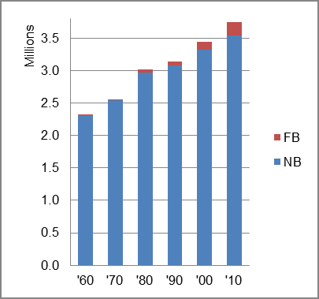

The foreign-born (FB) population increased from 20,003 in 1960 to 206,382 in 2010. That was an increase of 931.8 percent. The foreign-born share increased from 0.9 percent to 5.5 percent.
The share of the overall population that was native-born (NB) increased by 53.6 percent.
Oklahoma: Population 1960-2010 
The first chart below shows the three population change factors for three periods adjusted for annual average amounts. Natural change (B-D) was consistently the major factor in population increase for all periods.
The second chart shows the same data but with an adjustment to reflect births to immigrants shifted to NIM. In it, B-D remained the major factor in population increase, but NIM rose to nearly one-third (31.2%) of the increase in the most recent period.
Oklahoma: Sources of Population Change 1990-2013 Oklahoma: Sources of Population Change (Adjusted) 1990-2013
B-D NDM NIM B-D NDM NIM 90-'99 66.1% 20.3% 13.6% 90-'99 57.0% 20.3% 22.7% 00-'09 62.7% 15.8% 21.5% 00-'09 48.5% 15.8% 35.7% 10-'13 51.7% 32.1% 16.2% 10-'13 37.6% 32.1% 30.4%